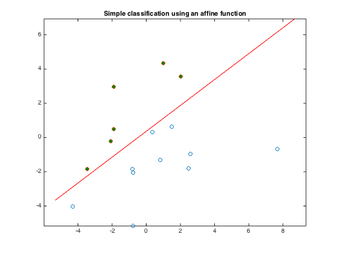

% Boyd & Vandenberghe "Convex Optimization" % Joelle Skaf - 10/16/05 % (a figure is generated) % % The goal is to find a function f(x) = a'*x - b that classifies the points % {x_1,...,x_N} and {y_1,...,y_M}. a and b can be obtained by solving a % feasibility problem: % minimize 0 % s.t. a'*x_i - b >= 1 for i = 1,...,N % a'*y_i - b <= -1 for i = 1,...,M % data generation n = 2; randn('state',3); N = 10; M = 6; Y = [1.5+1*randn(1,M); 2*randn(1,M)]; X = [-1.5+1*randn(1,N); 2*randn(1,N)]; T = [-1 1; 1 1]; Y = T*Y; X = T*X; % Solution via CVX fprintf('Finding a separating hyperplane...'); cvx_begin variables a(n) b(1) X'*a - b >= 1; Y'*a - b <= -1; cvx_end fprintf(1,'Done! \n'); % Displaying results linewidth = 0.5; % for the squares and circles t_min = min([X(1,:),Y(1,:)]); t_max = max([X(1,:),Y(1,:)]); t = linspace(t_min-1,t_max+1,100); p = -a(1)*t/a(2) + b/a(2); graph = plot(X(1,:),X(2,:), 'o', Y(1,:), Y(2,:), 'o'); set(graph(1),'LineWidth',linewidth); set(graph(2),'LineWidth',linewidth); set(graph(2),'MarkerFaceColor',[0 0.5 0]); hold on; plot(t,p, '-r'); axis equal title('Simple classification using an affine function'); % print -deps lin-discr.eps
Finding a separating hyperplane...
Calling SDPT3 4.0: 16 variables, 3 equality constraints
For improved efficiency, SDPT3 is solving the dual problem.
------------------------------------------------------------
num. of constraints = 3
dim. of linear var = 16
*******************************************************************
SDPT3: Infeasible path-following algorithms
*******************************************************************
version predcorr gam expon scale_data
NT 1 0.000 1 0
it pstep dstep pinfeas dinfeas gap prim-obj dual-obj cputime
-------------------------------------------------------------------
0|0.000|0.000|3.0e+02|1.1e+01|1.9e+03|-1.600000e+02 0.000000e+00| 0:0:00| chol 1 1
1|0.677|1.000|9.8e+01|8.0e-02|5.8e+02|-8.715458e+01 0.000000e+00| 0:0:00| chol 1 1
2|0.985|1.000|1.5e+00|8.0e-03|8.8e+00|-1.324385e+00 0.000000e+00| 0:0:00| chol 1 1
3|0.989|1.000|1.7e-02|8.0e-04|9.8e-02|-1.477477e-02 0.000000e+00| 0:0:00| chol 1 1
4|0.989|1.000|1.8e-04|3.4e-03|1.1e-03|-1.625866e-04 0.000000e+00| 0:0:00| chol 1 1
5|0.989|1.000|2.0e-06|4.5e-05|1.2e-05|-1.796888e-06 0.000000e+00| 0:0:00| chol 1 1
6|0.984|1.000|3.2e-08|4.0e-07|1.9e-07|-2.976878e-08 0.000000e+00| 0:0:00| chol 1 1
7|0.987|1.000|4.3e-10|6.5e-09|2.6e-09|-3.939962e-10 0.000000e+00| 0:0:00|
stop: max(relative gap, infeasibilities) < 1.49e-08
-------------------------------------------------------------------
number of iterations = 7
primal objective value = -3.93996184e-10
dual objective value = 0.00000000e+00
gap := trace(XZ) = 2.60e-09
relative gap = 2.60e-09
actual relative gap = -3.94e-10
rel. primal infeas (scaled problem) = 4.33e-10
rel. dual " " " = 6.46e-09
rel. primal infeas (unscaled problem) = 0.00e+00
rel. dual " " " = 0.00e+00
norm(X), norm(y), norm(Z) = 1.2e-10, 7.0e+00, 6.2e+01
norm(A), norm(b), norm(C) = 1.7e+01, 1.0e+00, 5.0e+00
Total CPU time (secs) = 0.05
CPU time per iteration = 0.01
termination code = 0
DIMACS: 4.3e-10 0.0e+00 1.6e-08 0.0e+00 -3.9e-10 2.6e-09
-------------------------------------------------------------------
------------------------------------------------------------
Status: Solved
Optimal value (cvx_optval): +3.93996e-10
Done!
